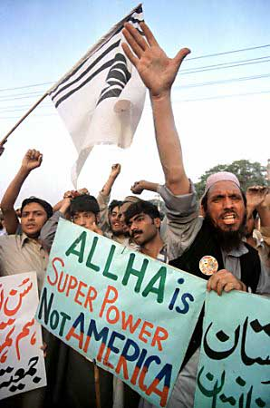

Guy Bruneau, 13 Septembre 2001, 15h00

- Georges attaque
l'Afganisatan
- L'OTAN suit Georges
- Le conflit déborde au Pakistant (Bin Laden y a des amis).
- Renversement d'alliance au Pakistant qui se tourne vers la Chine et ses "freres"
musulmans (voir 1914)
- La Chine entre dans le conflit
- L'inde entre dans le conflit
- Les pays arabes attaquent Israel (ou l'inverse)
- La Russie entre dans le conflit au coté de l'OTAN pour se débarasser
de la Tchetchenie
- Débordement nucléaire entre l'inde et le Pakistant
- Israel, la Chine, la russie et les USA suivent dans l'ordre ou dans le désordre
Dans les détails ca peu etre différent mais l'essentiel de l'idée
est qu'une attaque en Afganistant rique de déborder au Pakistant et à
partir de là le pire est possible.
Note: Réponse à l'histoire
se répète de Daniel.